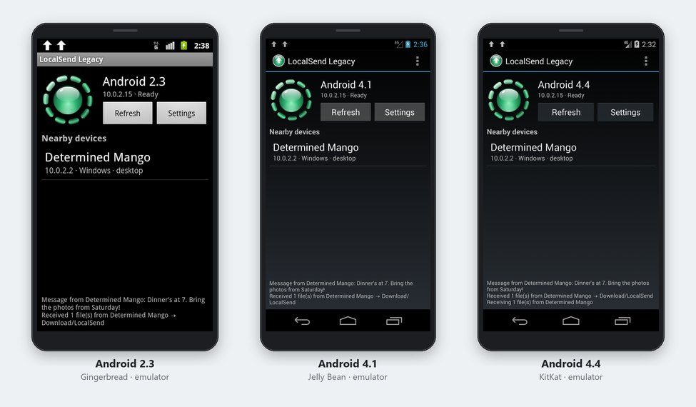
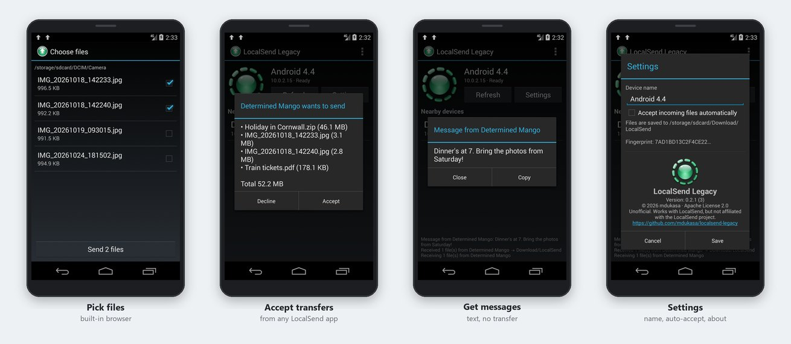
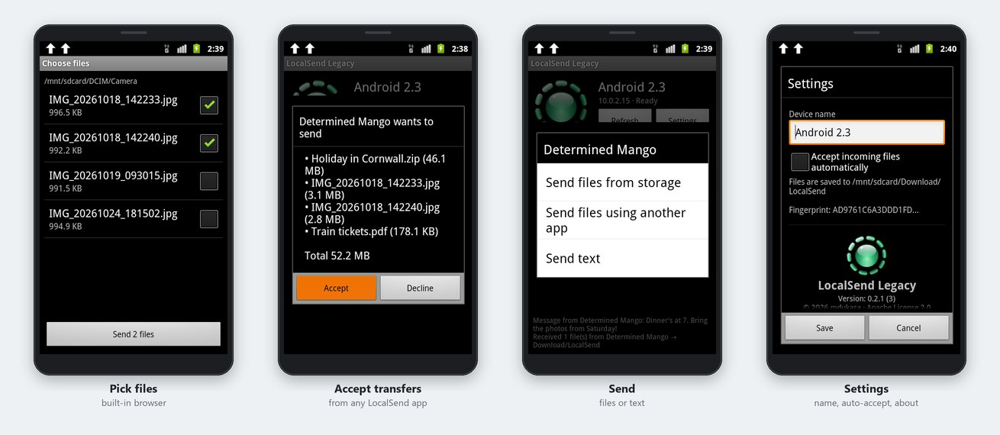

Features
Everything the official app does on your LAN, rebuilt for phones from 2011.
Works with LocalSend
Speaks the LocalSend v2 protocol, so it shows up in the official apps on Windows, macOS, Linux, Android and iOS.
Runs on anything
Plain Java with no native code. HTC Wildfire S, Galaxy Mini, Optimus One, Atom tablets, TV boxes…
Files & text
Send from the built-in file browser or any app's Share menu. Receive into Download/LocalSend.
Modern encryption
Bundles TLS 1.2/1.3 so a Gingerbread phone can talk to today's LocalSend, client certificate and all.
How it works
Zero configuration. Just install and start sharing.
- 1
Install the APK
Allow “Unknown sources” in Settings, then open the downloaded file.
- 2
Join the same Wi-Fi
Nearby LocalSend devices appear by themselves. Tap Refresh to scan.
- 3
Tap to send
Pick a device, choose your files, and they go straight across your network.
Screenshots
Android 2.3, 4.1 and 4.4 side by side

Android 4.4 KitKat, Holo theme

Android 2.3 Gingerbread

Compatibility
| Android | Status |
|---|---|
| 2.3 Gingerbread | Supported Tested on the 2.3.7 emulator and a stock HTC Wildfire S |
| 3.x Honeycomb | Supported Tested on the 3.2 emulator |
| 4.0 – 4.3 | Supported Tested on an HTC Wildfire S (ARMv6, CM 10.1) |
| 4.4 KitKat | Supported Tested on the 4.4.2 emulator |
| 5.0 – 17 | Works Fun for the retro look, but you probably want the official app |
Frequently asked questions
- Is it really free?
- Yes. It's open source under the Apache 2.0 license, with no ads and no tracking.
- Is this the official LocalSend?
- No. It's an unofficial, separate app that speaks the same protocol. The official LocalSend is built with Flutter, which needs ARMv7 and Android 5.0.
- Does it work over the internet?
- No. Everything stays on your local network.
- Where do received files go?
- Into
Download/LocalSendon your SD card or internal storage. - What isn't supported yet?
- PIN-protected receivers, “share via link” and an HTTPS receive server.